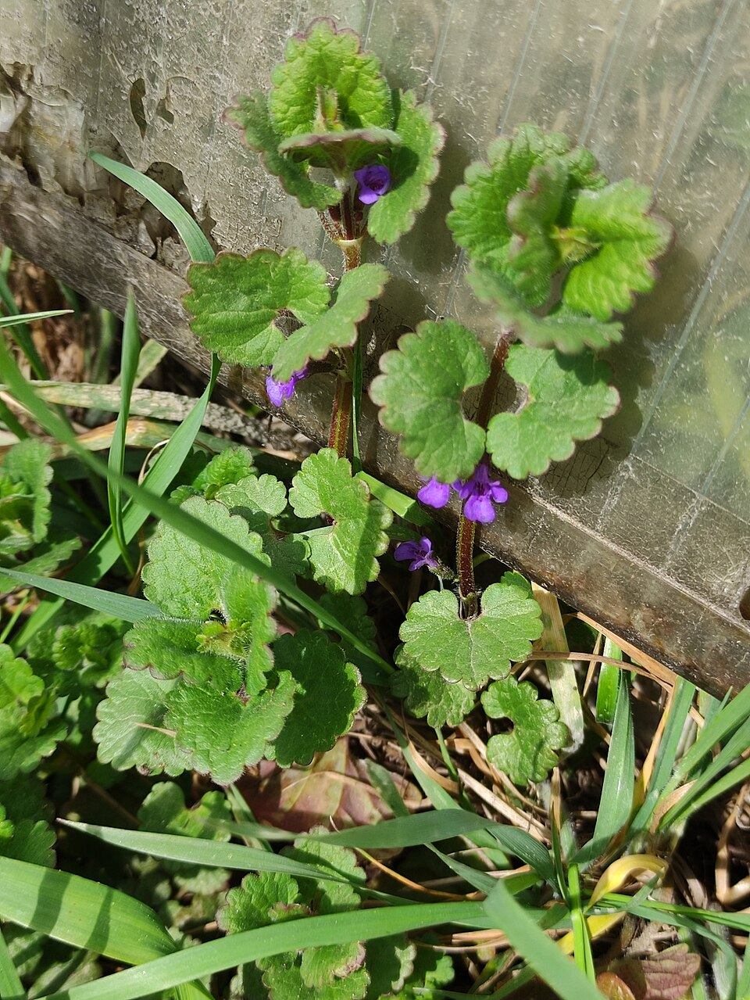

Edera terrestre: uso tradizionale, proprietà e avvertenze
Glechoma hederacea

Piccola erba strisciante dei prati e dei bordi di strada, con fiori lilla.
Proprietà attribuite dalla tradizione
- Uso tradizionaleNella tradizione erboristica europea la pianta è indicata come espettorante e lenitiva per tosse, bronchite e catarro, come diuretica e astringente, e per uso esterno come cicatrizzante su ferite (Alleanza Verde, scheda del genere Glechoma).
- Evidenza preliminareI componenti della pianta (flavonoidi, tannini, olio essenziale, diterpeni) sono oggetto di studi di laboratorio, che suggeriscono attività antinfiammatoria e antiossidante. La scheda non riporta studi clinici sull'uomo che confermino questi effetti (Alleanza Verde).
- Efficacia non dimostrataLe indicazioni storiche sono molto numerose, tra cui tubercolosi, ittero, coliche e disturbi dei lattanti. Non sono confermate da studi moderni e non vanno considerate indicazioni d'uso.
- Dato botanicoPer i preparati omeopatici la farmacopea francese fissa per la tintura madre un contenuto minimo di derivati idrossicinnamici pari allo 0,013% come acido clorogenico. Questo dato riguarda il controllo di qualità del preparato omeopatico, non l'efficacia (Pharmacopée française 2021).
Uso tradizionale
Storicamente si usa la pianta fresca, intera e senza radici, raccolta in fiore in primavera: 30-50 g in infuso o decotto, oppure sciroppo o tintura madre. Le fonti storiche sono antiche e non sostituiscono la verifica moderna. Alcuni erboristi usano la tintura madre 1:2 alla dose di 1,5–2 ml tre volte al giorno, ma la fonte precisa che non ci sono studi sull'uomo a sostegno di questo uso (Alleanza Verde, citando McDonald).
Avvertenze e controindicazioni
Secondo la scheda, la pianta è considerata non tossica, senza effetti collaterali di rilievo e senza controindicazioni particolari (Rossi 1995, citato in Alleanza Verde). Va evitata o usata con cautela in gravidanza, perché la specie G. longituba aumenta in vitro la contrazione della muscolatura dell'utero (Yang, citato in Alleanza Verde). Se si soffre di secchezza marcata, la scheda consiglia di limitarne l'uso (Holmes, citato in Alleanza Verde). La scheda riporta anche un uso contro l'intossicazione da piombo, basato su esperienza di erboristi e su un aumento dell'eliminazione urinaria del piombo osservato in pochi casi: non è un'indicazione validata, e non è indicato l'uso al posto del medico in caso di intossicazione.
Fonti
- Alleanza Verde, scheda del genere Glechoma L., con riferimenti a Grieve, Quer, Rossi (1995) e Holmes.
- Pharmacopée française 2021, Ground-ivy for homeopathic preparations (Glechoma hederacea).